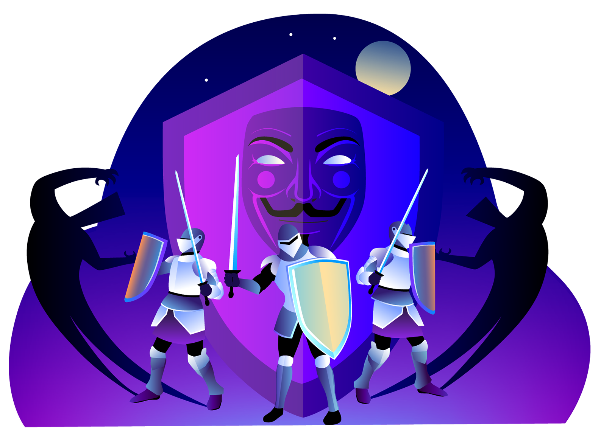

<ion-content fullscreen class="ion-padding" scroll-y="false">
  <ion-slides class="ion-margin-top" pager="true">

    <ion-slide>
      
      <h2>Qu'est-ce que List Hub ?</h2>
      <p><b>Centre de liste</b> fournit un ensemble puissant de services et de fonctionnalités qui apporte un tout nouveau niveau de gestion des tâches.</p>
    </ion-slide>

    <ion-slide>
      
      <h2>Convivial</h2>
      <p><b>Centre de liste</b> est livré avec une interface conviviale, facile à utiliser et fonctionnant sur presque toutes les plates-formes (iOS, Android et Web) et offrant la meilleure expérience utilisateur.</p>
    </ion-slide>

    <ion-slide>
      
      <h2>Collaboration de groupe</h2>
      <p><b>Centre de liste</b> vous permet de travailler et de rester en contact avec vos collègues, vos amis et votre famille en partageant vos listes et vos tâches, et en suivant leurs mises à jour et leurs progrès.</p>
    </ion-slide>

    <ion-slide>
      
      <h2>Performances & efficacité</h2>
      <p><b>Centre de liste</b> utilise les techniques, les stratégies et les outils les plus avancés afin d'améliorer l'efficacité énergétique et de fournir des performances élevées.</p>
    </ion-slide>

    <ion-slide>
      
      <h2>Sécurité et confidentialité</h2>
      <p>at <b>Appflow</b> nous prenons la confidentialité très au sérieux et nous travaillons dur pour garantir la sécurité de vos données en mettant en œuvre des mesures de sécurité sophistiquées.</p>
    </ion-slide>

    <ion-slide>
      
      <h2>Prêt à commencer?</h2>
      <ion-button style="color: var(--ion-color-yellow-light)" fill="clear" (click)="tutorialFinished()">
        <ion-icon slot="end" name="arrow-forward"></ion-icon>
        Continue
      </ion-button>
    </ion-slide>

  </ion-slides>
</ion-content>
